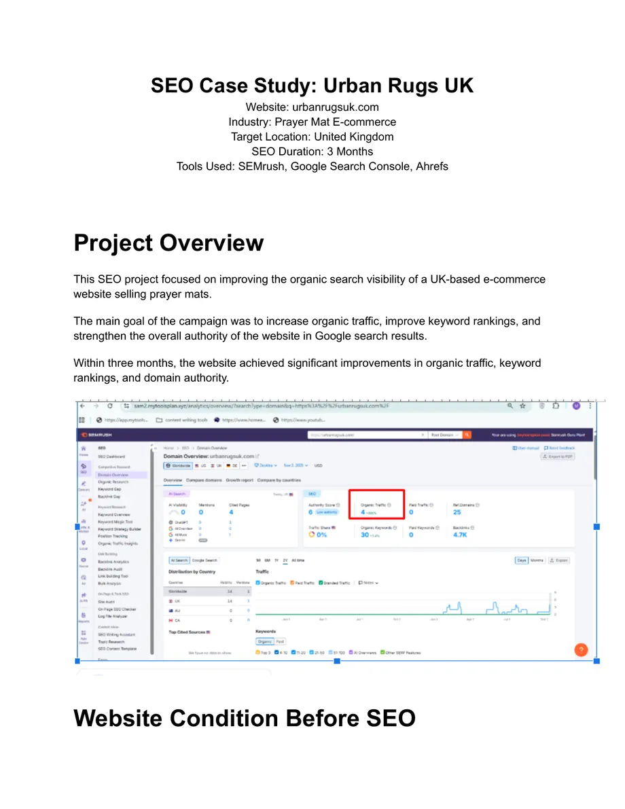
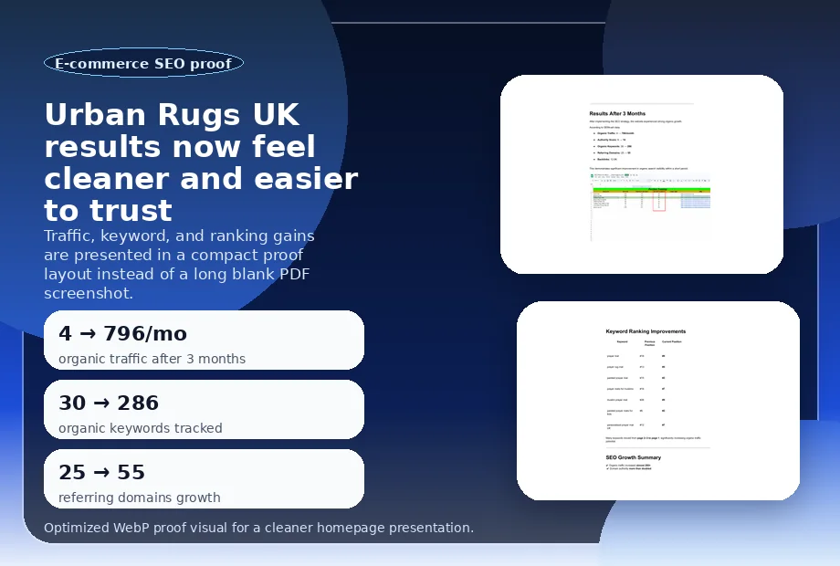

Urban Rugs UK: a 3-month SEO campaign that moved commercial terms onto page 1

This campaign focused on improving the organic search visibility of a UK-based e-commerce store selling prayer mats. The site started with very limited organic traffic and weak keyword visibility, so the work centered on commercial keyword targeting, better product-page optimization, technical fixes, and trust-building signals.
Starting point
Before the campaign, the website had minimal search traction and several important keywords were stuck on page 2 or page 3 of Google, which limited both visibility and sales potential.
- Authority score: started at 6 according to the case study source.
- Commercial keyword challenge: terms like prayer mat and prayer rug mat were outside the top 10.
- Visibility gap: the website was not capturing enough demand from high-intent UK searches.
Strategy implemented
The campaign combined multiple SEO workstreams so that no single fix had to carry the entire result alone.
- High-intent keywords related to prayer mats in the UK market were identified and mapped to relevant pages.
- Existing pages were expanded and optimized for topical relevance and clearer commercial intent.
- Internal linking was improved to help distribute authority across important pages.
- Backlink and authority work supported trust and stronger ranking movement.

Results after 3 months
After implementation, the case study reports a clear jump in visibility and supporting trust signals.
- Organic traffic: 4 to 796 per month.
- Authority score: 6 to 14.
- Backlinks: 12.6K listed in the case study snapshot.
- Outcome: more commercial keywords moved into meaningful positions for real search demand.
Keyword movement
The strongest story is not just the traffic increase. It is the movement of high-intent keywords from weaker positions toward page 1.
Why this mattered
For an e-commerce site, stronger keyword positioning means more qualified product-page traffic, more visibility for commercial queries, and a better chance of turning search demand into sales. This case study is a good example of how structured SEO work can create measurable movement within a relatively short timeframe.
You can keep a direct copy of the source document here: Urban Rugs UK PDF.